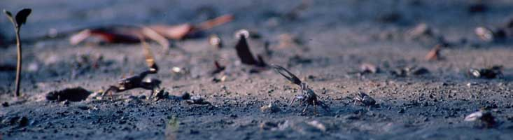
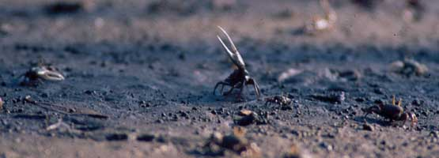

Altevogt, R. (1969) Ein sexualethologischer Isolationsmechanismus bei sympatrischen Uca -Arten (Ocypodidae) des Ostpazifik. forma et functio 1:238-249. {An ethological reproductive isolation mechanism in sympatric species of Uca (Ocypodidae) of the Eastern Pacific} Altevogt, R. (1972) Physiological inter-relations of display and locomotion in fiddler crabs: An evolutionary aspect. Journal of the Marine Biological Association of India 14(2):456-467. Barnwell, F.H., and W.A. Szelistowski (1985) Twenty-one species of fiddler crabs (genus Uca ) from a small tidal river on the Pacific coast of Costa Rica. American Zoologist 25(4):86A. Bott, R. (1954) Dekapoden (Crustacea) aus El Salvador. 1. Winkerkrabben (Uca ). Senckenbergiana biologica 35(3-4):155-180. Crane, J. (1944) On the color changes of fiddler crabs (genus Uca ) in the field. Zoologica NY 29:161-168. Crane, J. (1947) Eastern Pacific expeditions of the New York Zoological Society. XXXVIII. Intertidal brachygnathous crabs from the west coast of tropical America with special reference to ecology. Zoologica 32(2):69-95. Crane, J. (1957) Basic patterns of display in fiddler crabs (Ocypodidae, Genus Uca ). Zoologica NY 42:69-82. Crane, J. (1966) Combat, display and ritualization in fiddler crabs (Ocypodidae, genus Uca ). Philosophical Transactions of the Royal Society of London. Series B, Biological Sciences 251:459-472. Maccagno, T. (1928) Crostacei Decapodi. Le specie del genere Uca Leach conservate nel Regio Museo Zoologico di Torino. Bollettino dei Musei di Zoologia ed Anatomia comparata della R. Università di Torino 41(11):1-52. Nobili, G. (1901) Viaggio del Dr. Enrico Festa nella Repubblica dell'Ecuador e regioni vicine. XXIII. Decapodi e Stomatopodi. Bollettino dei Musei di Zoologia ed Anatomia comparata della R. Università di Torino 16(415):1-58. Oliveira, L.P.H.d. (1939) Contribuição ao conhecimento dos crustaceos do Rio de Janeiro. Genero Uca (Decapoda: Ocypodidae). Memórias do Instituto Oswaldo Cruz 34(1):115-148. Portell, R.W., J. Luque, A.J.W. Hendy, and J.H. Christy (2012) Fidelity of marine invertebrate death and fossil assemblages in a coastal marine ecosystem, Bahia Bique, Panama. Abstracts with Programs 44(7):268. Rathbun, M.J. (1935) Preliminary description of six new species of crabs from the Pacific coast of America. Proceedings of the Biological Society of Washington 48:49-52. von Hagen, H.-O. (1968) Studien an peruanischen Winkerkrabben (Uca ). Zoologische Jahrbücher. Abteilung für Systematik, Ökologie und Geographie der Tiere 95(2):395-468. {Studies of Peruvian fiddler-crabs (Uca )} von Hagen, H.-O. (1970) Verwandtschaftliche Gruppierung und Verbreitung der Karibischen Winkerkrabben (Ocypodidae, Gattung Uca ). Zoologische Mededelingen 44(15):217-235.